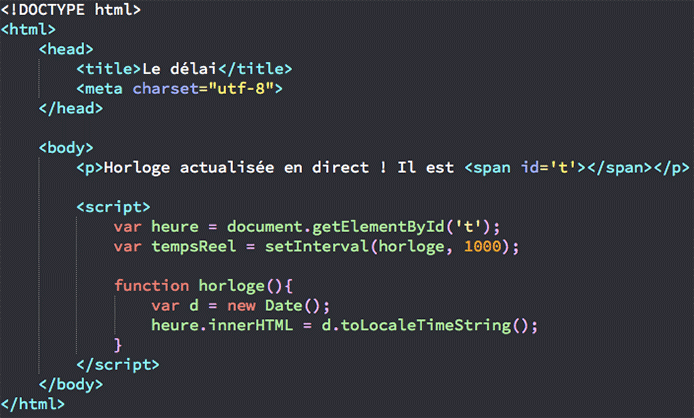
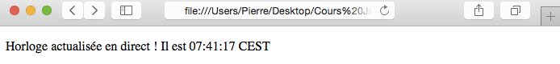
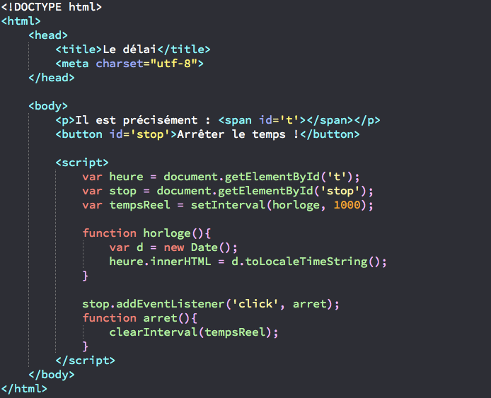
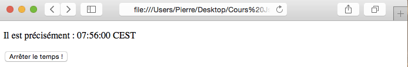
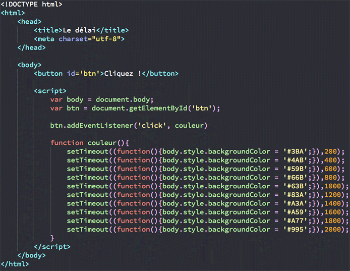

Apprendre javascript
notion avancé
Délai et animations
Le JavaScript nous permet d’exécuter des blocs de code à un certain moment donné ou à répétition avec un intervalle de temps fixe entre chaque répétition. Cela peut être très utile pour créer des animations (horloge, slider, etc.) entre autres. Pour gérer le délai d’exécution d’un code, nous allons utiliser les méthodes setInterval() et setTimeout().La méthode setInterval() est une méthode de l’objet Window. Elle va nous permettre d’exécuter un script en boucle en précisant un intervalle de temps entre chaque répétition. Cette méthode va prendre en arguments le bloc de code à exécuter en boucle et l’intervalle entre chaque exécution exprimé en millisecondes.
On va par exemple simplement pouvoir créer un timer pour notre site avec l’heure qui va se mettre à jour automatiquement toutes les secondes :

Dans l’exemple ci-dessus, on crée une fonction horloge qui va récupérer l’heure actuelle dans un objet de type Date et l’afficher en HTML. La méthode toLocaleTimeString() nous permet de récupérer l’heure correspondant à notre faisceau horaire, c’est-à-dire l’heure française dans mon cas. Ensuite, on utilise setInterval() pour exécuter notre fonction horloge toutes les secondes, et ainsi récupérer et afficher la date actuelle. Notez que nous créons également une variable tempsReel qui ne nous sert pas pour le moment mais qui va nous être utile par la suite pour manipuler notre code.
La méthode clearInterval() va nous permettre d’arrêter l’exécution d’une fonction passée à la méthode setInterval(). Pour que clearInterval() fonctionne, il va cependant falloir lui passer une variable contenant la méthode setInterval(). Cette variable doit être globale. C’est pour cela que nous avons créé la variable tempsReel dans l’exemple précédent dans l’espace global de notre script.

La méthode setTimeout() va nous permettre d’exécuter un bloc de code après un certain moment donné. Cette méthode appartient également à l’objet implicite Window. Il va falloir passer deux arguments à cette méthode : une fonction à exécuter et un nombre en millisecondes précisant à quel moment exécuter la fonction à partir de l’exécution de setTimeout().
Ici, on utilise plusieurs fois setTimeout() pour modifier la couleur de l’arrière plan de notre page dès qu’un utilisateur clique sur notre bouton. On passe une fonction anonyme à setTimeout() dont le rôle est simplement de changer la couleur de fond de l’élément body. En deuxième argument, on précise quand notre fonction anonyme doit être exécutée à partir du clic sur le bouton. Voici comment se déroule l’action dans son ensemble : un utilisateur arrive sur la page, et clique sur le bouton. Dès que le bouton est cliqué, notre fonction couleur() est exécutée et ainsi les différents appels à setTimeout() sont lancés à la suite selon le délai qu’on leur a attribué. Pour stopper l’exécution de setTimeout(), on peut cette fois ci utiliser la méthode clearTimeout(). Cette méthode va également avoir besoin d’une variable globale si vous comptez l’utiliser. Cependant, les cas où l’on va avoir besoin d’arrêter l’exécution de setTimeout() vont être très rares.